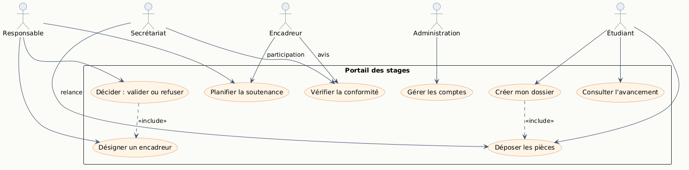

Figure 2 — Classes du domaine et cardinalités
Le service scolaire suit un dossier de stage depuis son dépôt jusqu'à la soutenance. Cinq profils interviennent dans le portail : l'étudiant alimente son dossier, le secrétariat vérifie les pièces, le responsable décide et planifie, l'encadreur donne un avis et accompagne la soutenance, enfin l'administration gère les comptes.
Le regroupement « Portail des stages » contient huit services. Deux relations <<include>>
expriment qu'un dossier créé doit recevoir ses pièces, et qu'une décision positive entraîne la désignation
d'un encadreur. Le secrétariat peut relancer l'étudiant sans changer le statut du dossier.

Huit classes structurent le modèle. Un compte donne lieu à une fiche étudiant ou encadreur au plus ; un étudiant dépose plusieurs demandes, une entreprise en accueille plusieurs, et un encadreur en suit plusieurs. Une demande contient au plus deux pièces, porte un journal de transitions et aboutit à une seule soutenance.
Soutenance est conservée car l'EF-07 du TP2
porte sur les conflits de créneaux. PieceJointe matérialise la limite de 5 Mo (ENF-02) et
Historique garde une trace des décisions. En revanche, la règle « encadreur seulement après
validation » est laissée à la couche applicative : MySQL 8 refuse un CHECK sur une colonne
utilisée par une clé étrangère en ON DELETE SET NULL.
Objectif. Transformez un dossier déposé en dossier validé, prêt pour l'affectation d'un
encadreur et la programmation d'une soutenance. Acteur principal : responsable des stages.
Préconditions : le dossier est au statut DEPOSEE et les pièces sont contrôlées.
| Étape | Action | Résultat ou erreur |
|---|---|---|
| 1 | Le responsable ouvre la file des dossiers déposés. | Liste triée par date de dépôt. |
| 2 | Il vérifie la convention et l'attestation. | E-03 : pièce absente → INCOMPLETE avec motif. |
| 3 | Il confirme la validation. | E-04 : date de décision manquante ; E-01 : entreprise inconnue (FK). |
| 4 | Le système désigne un encadreur disponible. | E-07 : encadreur inactif → blocage. |
| 5 | Il réserve une salle et un créneau de 40 minutes. | E-08 : créneau déjà occupé → en proposer un autre. |
| 6 | Le système écrit le journal et notifie l'étudiant. | Fin : statut VALIDEE, soutenance créée. |
Erreurs complémentaires : E-02 fichier supérieur à 5 Mo au dépôt ; E-05 refus sans motif ;
E-06 doublon de dossier étudiant/entreprise. Le refus suit le même chemin jusqu'à l'étape 3, puis
écrit REFUSEE sans créer de soutenance.
Les trois scripts sont exécutés dans cet ordre sur une base vide :
001_schema.sql (tables, clés et vues), 002_seed.sql (jeu fictif),
puis 003_verification.sql (contrôles). MySQL 8.0.46 et utf8mb4_unicode_ci ont été utilisés.
| Table | Règles vérifiées |
|---|---|
| utilisateur | email unique uq_compte_email, rôle énuméré, mot de passe haché bcrypt. |
| etudiant / encadreur | un compte = une fiche, matricule unique côté étudiant. |
| demande_stage | FK vers étudiant, entreprise et encadreur ; motif et dates exigés selon le statut. |
| piece_jointe | au plus une pièce par catégorie et par dossier, chk_piece_taille ≤ 5 Mo. |
| historique | statut avant/après, auteur, motif et horodatage. |
| soutenance | une par dossier, unicité salle + créneau, durée entre 20 et 90 minutes. |
Six insertions volontairement invalides ont été tentées après le chargement :
| Cas | Erreur MySQL observée |
|---|---|
Motif absent sur INCOMPLETE | ERROR 3819 — chk_motif_requis is violated |
| Étudiant inexistant | ERROR 1452 — demande_fk_etudiant |
| Email déjà pris | ERROR 1062 — uq_compte_email |
| Décision sans date | ERROR 3819 — chk_date_decision_requise is violated |
| Salle et créneau déjà réservés | ERROR 1062 — uq_creneau_salle |
| Pièce de 6 Mo | ERROR 3819 — chk_piece_taille is violated |
Après ces six échecs, les comptages restent inchangés : 4 demandes, 8 comptes et 1 soutenance.
Le jeu d'essai contient 8 comptes, 3 étudiants, 2 encadreurs, 2 entreprises, 4 demandes, 5 pièces,
7 transitions et 1 soutenance. Les quatre demandes couvrent les statuts INCOMPLETE,
DEPOSEE, VALIDEE et REFUSEE. La sortie ci-dessous a été obtenue
en rejouant les trois scripts sur une base vide ; elle sert de résultat attendu.
+---------------+----+ | element | nb | +---------------+----+ | demande_stage | 4 | | encadreur | 2 | | entreprise | 2 | | etudiant | 3 | | historique | 7 | | piece_jointe | 5 | | soutenance | 1 | | utilisateur | 8 | +---------------+----+ +----------------+----+ | statut_dossier | nb | +----------------+----+ | DEPOSEE | 1 | | INCOMPLETE | 1 | | VALIDEE | 1 | | REFUSEE | 1 | +----------------+----+ +----------------------+----+ | indicateur | nb | +----------------------+----+ | dossiers_a_completer | 1 | | soutenances_prevues | 1 | +----------------------+----+ +------------+----------+-----------------------------------+---------------------+ | dossier_id | etudiant | motif | date_depot | +------------+----------+-----------------------------------+---------------------+ | 1 | KPANOU | Attestation d'assurance manquante | 2026-09-14 08:45:00 | +------------+----------+-----------------------------------+---------------------+ +------------+--------------+--------------+----------+------------------+ | demande_id | statut_avant | statut_apres | auteur | horodatage | +------------+--------------+--------------+----------+------------------+ | 4 | BROUILLON | DEPOSEE | KPANOU | 2026-08-25 16:10 | | 4 | DEPOSEE | REFUSEE | OGOUNA | 2026-08-30 10:00 | | 3 | BROUILLON | DEPOSEE | VODOUNOU | 2026-09-02 09:15 | | 3 | DEPOSEE | VALIDEE | OGOUNA | 2026-09-09 11:30 | | 1 | BROUILLON | DEPOSEE | KPANOU | 2026-09-14 08:45 | | 1 | DEPOSEE | INCOMPLETE | ATCHADE | 2026-09-16 10:05 | | 2 | BROUILLON | DEPOSEE | SODJINOU | 2026-09-28 14:20 | +------------+--------------+--------------+----------+------------------+ +---------------------+-------+---------+----------+----------------------+ | date_heure | salle | minutes | etudiant | entreprise | +---------------------+-------+---------+----------+----------------------+ | 2026-12-10 10:30:00 | B2 | 40 | VODOUNOU | Sahara Data Services | +---------------------+-------+---------+----------+----------------------+
Le dossier 1 illustre le statut INCOMPLETE (attestation manquante), le dossier 3 la validation avec
soutenance en salle B2 le 10 décembre 2026, et le dossier 4 le refus pour absence de lien avec le cursus.